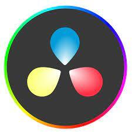

Descubrir exactamente qué estilo me gusta más ha sido una acción a la cual ya me rendí. Escucho una gran variedad de música sin importar el género o el instrumento que se usa, desde pop, rock, jazz y la lista puede seguir. Regularmente la escucho cuando estoy realizando una actividad, hacer esta página no es la excepción. Esta es la canción que escuchaba durante la realización de esta página.
Editar videos
Desde pequeño me ha interesado el tema de la creación de videos, grabarlos, editarlos y mucho más. Raramente este ha sida un pasamtiempo que me ha ayudado varios aspectos académicos. En este tiempo, el programa que utilizo para la edición de videos es DaVinci Resolve.

Ver documentales
Me encanta el formato de los documentales, ya sea en miniseries o peliculas, si es una historia real, interesante y buena es muy probable que lo vea con mucho gusto. Gracias a esta clase de entretenimiento puedo divertirme y aprender al mismo tiempo de cosas interesantes explicadas de una forma que no me aburran.